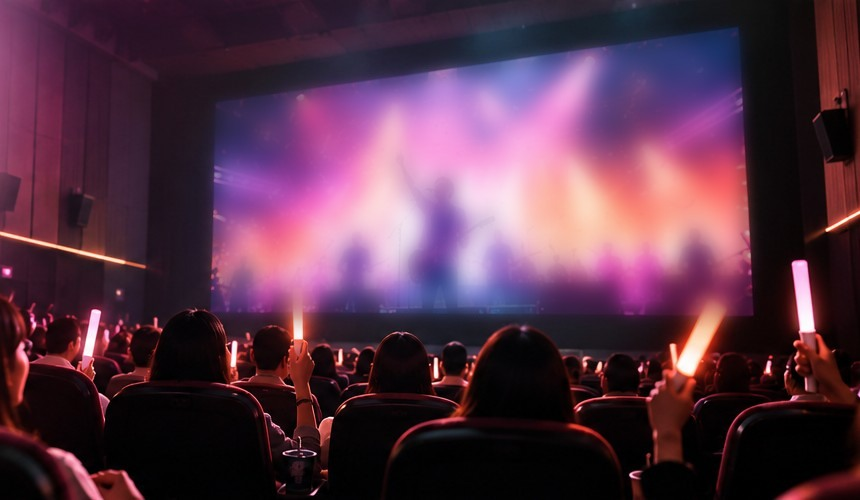
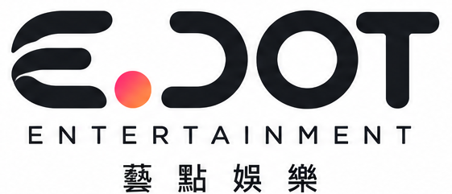

BEYOND THE VENUE演唱會的精彩，
演唱會的精彩，
在電影院同步感受。
透過第二現場同步轉播，讓無法親臨主場館的觀眾，也能在電影院大銀幕與沉浸式音效中，共享精彩時刻。
※ 圖片為 AI 生成情境示意，非實際合作案例。
洽詢合作 ↗電影院裡的第二現場
透過大銀幕與音效，讓不同城市的觀眾也能共同欣賞同一場演出。實際放映形式與合作內容依各活動規劃而定。


透過第二現場同步轉播，讓無法親臨主場館的觀眾，也能在電影院大銀幕與沉浸式音效中，共享精彩時刻。
※ 圖片為 AI 生成情境示意，非實際合作案例。
洽詢合作 ↗透過大銀幕與音效，讓不同城市的觀眾也能共同欣賞同一場演出。實際放映形式與合作內容依各活動規劃而定。